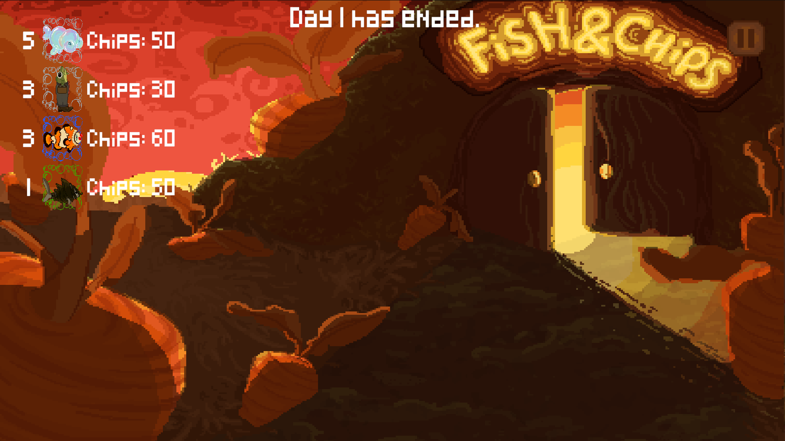

Fish & Chips is a simple 2d fishing game with a little twist, the fish you catch turn into gambling chips. Which you can use to buy upgrades.
This project was made in collaboration with 3 students from Finland, and one fellow Dutch student (besides me), for a total of 2 developers and 3 artists.
I had a lot of fun working with international students, it was a great experience and I learned a lot from it.
Trailer video:
My contribution:
Fishing minigame
I have spent a lot of time making this minigame, especially figuring out how to make the hit-zones (I ended
up making a custom mesh for them).
It was also a challenge to select what fish you would catch according to their rarities, to make less rare fish
appear more.
private int GetFishType()
{
// get probabilities
List<float> probabilities = new List<float>();
foreach (KeyValuePair<EFishType, int> fish in FishingRod.instance.fishProbabilities)
{
probabilities.Add(fish.Value);
}
// total probability
float totalProbability = 0f;
foreach (float f in probabilities) totalProbability += f;
// random
float randomValue = UnityEngine.Random.value * totalProbability;
// find value
float crawlingValue = 0f;
for (int i = 0; i < probabilities.Count; i++)
{
crawlingValue += probabilities[i];
if (crawlingValue >= randomValue) return i;
}
return -1;
}
Time management
I have made the time management using the Unity TimeSpan, which sends an update through the EventManager every few (in game) minutes, which runs the entire game.
private void Update()
{
if (!doTime) return;
// calculate current time
currentTime += Time.deltaTime * (60 / minutesPerDay * (dayEndTime - dayStartTime));
span = baseSpan + TimeSpan.FromSeconds(currentTime);
// update time when necessary
if (span.Minutes % minutesPerUpdate == 0) EventManager.OnTimeChanged(span);
// end the day
if (span.Hours == dayEndTime)
{
EventManager.OnDayEnd(span.Days);
baseSpan += new TimeSpan(1, 0, 0, 0);
currentTime = 0;
}
}
Inventory

The inventory consists of 2 parts: the daily inventory, and the all-time inventory.
The trickiest part was making the bit for the daily inventory, which grouped all the fish of the same rarity together, which luckily
I managed to figure out how to do. And obviously the all-time inventory was very easy, since it is just a list of all the fish you have caught.
public void Initialize()
{
// find all fish
List<FishType> inv = new List<FishType>();
foreach (KeyValuePair<FishType, List<FishStats>> f in Inventory.instance.inventoryDictionary)
{
for (int i = 0; i < f.Value.Count; i++)
{
inv.Add(f.Key);
}
}
// get all rarities
Rarity[] rarities = FishingRod.instance.rarities;
EFishType[] types = rarities.Select(r => r.rarity).ToArray();
// loop through all fish types and group them
for (int i = 0; i < types.Length; i++)
{
// get all fish of current type
Dictionary<string, int> fishByType = inv
.Where(f => f.type == types[i])
.GroupBy(f => f.fishName)
.ToDictionary(g => g.Key, g => g.Count());
// generate inventory (ui) item for current fish type
foreach (var (name, count) in fishByType)
{
FishType fishType = inv.First(f => f.fishName == name);
GenerateItem(fishType, count, rarities[i]);
}
}
}
Logbook
Making the logbook was quite an interesting challenge, since I only had one week left to make it and finish the rest of the game.
But luckily I managed to make it in time, albeit with not the prettiest code. But that's just how it is in the last week of development.